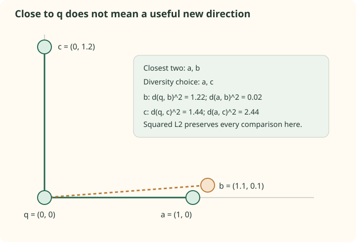

Build HNSW: choose routes, not just nearby neighbors
Search can only follow links that construction kept. If a node's connection budget is spent on several nearly identical directions, another region may be hard to reach. HNSW's neighbor-selection heuristic uses candidate-to-candidate distances to avoid spending every slot on the closest local cluster.
The previous chapter followed query queues on a fixed graph. Here the query is a vector being inserted, and discovered candidates become possible connections. The insertion algorithm uses search, but search alone does not decide which edges survive.
Follow one insertion through its levels
For new point q, sample its highest level $\ell$. Let L be the current graph's highest level and ep its entry point. The paper's Algorithm 1 has two phases:
- Above q's highest level, use greedy layer search with ef = 1 to improve the entry point. q will not be connected on those levels.
- From level min(L, $\ell$) down to 0, search with
efConstruction, select up to M neighbors, connect q, and prune existing adjacency lists if their capacities are exceeded.
Suppose L=3 and q receives $\ell=1$. Greedy navigation runs on levels 3 and 2. Candidate search and connection selection run on levels 1 and 0. If instead q receives level 4, it gets a new highest layer and becomes the entry point, while lower-layer connections are built against the existing graph.
HNSW does not require a global k-means training stage before adding vectors. That differs from a typical IVF index, which learns a partitioning quantizer. HNSW still has a substantial construction process: searching, choosing links, storing adjacency, and handling updates are not free.
Insertion order and random choices affect the graph. A fixed seed is useful, but it is not a cross-platform or multi-threaded bitwise reproducibility guarantee. Record the order, library, version, and threads when comparing builds.
Candidate discovery and link selection are separate
efConstruction controls retained candidates during insertion search. M is the new point's connection-selection budget. A larger pool can expose more routes for the selector; it does not mean that every candidate becomes a permanent edge.
In the paper's lower-layer loop, the found pool W also supplies entry points for the next layer. The pinned hnswlib implementation carries a closest selected neighbor as its next entry. Read that difference as an implementation choice rather than silently equating every line of the paper and every library.
Neither a wider construction search nor the diversity rule can choose a useful candidate that the search never discovered. Conversely, finding useful candidates is insufficient if selection and pruning remove all routes toward them.
Calculate a diversity decision
Place the new point at q=(0,0), with candidates a=(1,0), b=(1.1,0.1), and c=(0,1.2). M=2. Closest-only selection would choose a and b, whose query distances are smaller than c's.
A strict paper-style diversity rule considers candidates in increasing distance to q. Accept candidate e only when it is closer to q than to every already selected point r:
The first candidate is accepted because R is empty. Subsequent candidates must contribute a route not already covered by something closer to them than q is. This is a distance comparison, not an explicit angular threshold.
| Candidate | Distance to q, squared | Distance to selected a, squared | Decision |
|---|---|---|---|
| a | 1 | Not applicable | Accept first |
| b | 1.22 | 0.02 | Reject: b is much nearer to a than to q |
| c | 1.44 | 2.44 | Accept: q is nearer to c than a is |


Squared L2 is not itself a metric with the usual triangle inequality. Here it is used only to preserve the ordering of nonnegative Euclidean distances in each comparison. Do not turn this arithmetic convenience into a claim that every non-metric score inherits geometric connectivity guarantees.
Run nearest-only and diverse selection
from reference import exact_topk, select_diverse
q = (0.0, 0.0)
candidates = {"a": (1.0, 0.0), "b": (1.1, 0.1), "c": (0.0, 1.2)}
print(exact_topk(q, candidates, 2)) # ['a', 'b']
print(select_diverse(q, candidates, list(candidates), 2)) # ['a', 'c']Run beside the reference. The tests verify every displayed squared distance and both selection results.
A heuristic need not fill every slot
If all candidates lie close together in the same direction, a strict diversity rule can retain fewer than M. The paper gives two optional controls: extend the candidate pool through neighboring nodes, and refill spare slots from rejected candidates.
For a=(1,0), b=(1.1,0), c=(1.2,0), the strict reference retains only a even with M=3. With keep_pruned=True, it fills the remaining slots with b and c. Refilling changes the result; silently treating M as an exact final degree would hide this choice.
hnswlib 0.8.0 does not reproduce every option in the paper's Algorithm 4. Its selector returns the original pool directly when its size is below M, and its comparison rejects a candidate when a selected point is strictly closer to it than q is. Equal-distance behavior therefore differs from the strict reference rule. Our non-tied three-point example avoids that ambiguity.
Separate M from the adjacency capacities
Connections are attempted in both directions. Existing neighbors can gain additional links as later points arrive, so their current degrees need not equal their original insertion budgets.
| Quantity | Purpose | Pinned default relationship |
|---|---|---|
| M | Budget passed to selection for the new point | Up to M selected neighbors |
| maxM | Capacity of an existing upper-level adjacency list | M |
| maxM0 | Capacity of an existing base-level adjacency list | 2M |
| efConstruction | Retained search candidates during build | Internally at least M in this version |
With M=16, a new point's selector still receives budget 16 on the base layer. The capacity 32 allows an existing base node to acquire links through later insertions before pruning. It is not a promise of 32 initial links per new point.
The paper separately names M, $M_{\max}$, and $M_{\max0}$, and recommends studying their effects. A library can fix some relationships. Log the effective implementation settings rather than inferring them from one visible constructor argument.
Pruning changes the routes you thought were reciprocal
Suppose q selects existing neighbor r. q's list gains r, and the insertion attempts to add q to r's list. If r is full, its candidates include its current neighbors and q; the selector rewrites that local list under r's capacity.
That local pruning can discard q or another older neighbor. The pinned hnswlib routine does not perform a matching reverse-edge removal for every pruned adjacency. Therefore the final adjacency relation should not be assumed to remain perfectly symmetric merely because insertion attempts reciprocal links.
Search follows the stored outgoing lists. The teaching diagrams use simple two-way edges to isolate a mechanism, while a real graph's directions, degrees, and pruned connections depend on construction. Dump and inspect the actual index if a claim depends on its exact topology.
A wider query can explore surviving routes, but cannot restore a pruned edge. If recall saturates as efSearch rises, compare builds with different M, construction effort, or insertion conditions while keeping the corpus and metric fixed.
Why might a farther candidate be a better graph neighbor?
It can supply a different route instead of duplicating access to the nearest local cluster. The heuristic compares candidate-to-selected distances to decide whether that route is already covered.
Does M=16 imply every node has exactly 16 outgoing edges?
No. Candidate pools can be small, heuristic selection can prune, existing nodes can gain later connections, and layer capacities differ. M is a configured budget, not a universal exact degree.
Is changing a stored configuration field equivalent to rebuilding the graph?
No. The existing links reflect the earlier searches and pruning. To compare construction settings meaningfully, build the corresponding graphs and measure them under the same query workload.
Sources
- HNSW paper, Algorithm 1, Algorithm 4, and construction-parameter experiments.
- hnswlib 0.8.0 source,
getNeighborsByHeuristic2andmutuallyConnectNewElement. - Pinecone HNSW guide, the distinction between insertion budget and per-level capacities.